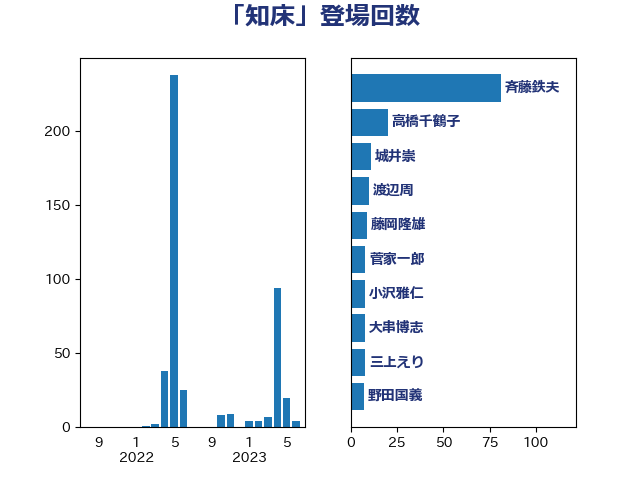

単語「知床」

| 斉藤鉄夫 | 公明党 | 81 回 |
| 高橋千鶴子 | 日本共産党 | 20 回 |
| 城井崇 | 立憲民主党 | 11 回 |
| 渡辺周 | 立憲民主党 | 10 回 |
| 藤岡隆雄 | 立憲民主党 | 9 回 |
| 菅家一郎 | 自由民主党 | 8 回 |
| 小沢雅仁 | 立憲民主党 | 8 回 |
| 大串博志 | 立憲民主党 | 8 回 |
| 三上えり | 立憲民主党 | 8 回 |
| 野田国義 | 立憲民主党 | 7 回 |
| 福島伸享 | 無所属 | 7 回 |
| 石井苗子 | 日本維新の会 | 7 回 |
| 石川香織 | 立憲民主党 | 6 回 |
| 浜口誠 | 国民民主党 | 6 回 |
| 森屋隆 | 立憲民主党 | 6 回 |
| 紙智子 | 日本共産党 | 5 回 |
| 岸田文雄 | 自由民主党 | 5 回 |
| 串田誠一 | 日本維新の会 | 5 回 |
| 野村哲郎 | 自由民主党 | 4 回 |
| 道下大樹 | 立憲民主党 | 4 回 |
| 石井浩郎 | 自由民主党 | 4 回 |
| 田村智子 | 日本共産党 | 4 回 |
| 松原仁 | 立憲民主党 | 4 回 |
| 高橋光男 | 公明党 | 3 回 |
| 長浜博行 | 無所属 | 3 回 |
| 西村智奈美 | 立憲民主党 | 3 回 |
| 神津たけし | 立憲民主党 | 3 回 |
| 清水貴之 | 日本維新の会 | 3 回 |
| 泉健太 | 立憲民主党 | 3 回 |
| 市村浩一郎 | 日本維新の会 | 3 回 |
| 塩田博昭 | 公明党 | 3 回 |
| 前川清成 | 日本維新の会 | 3 回 |
| 伴野豊 | 立憲民主党 | 3 回 |
| 伊藤渉 | 公明党 | 3 回 |
| 中山展宏 | 自由民主党 | 3 回 |
| たがや亮 | れいわ新選組 | 3 回 |
| おおつき紅葉 | 立憲民主党 | 3 回 |
| 鬼木誠 | 立憲民主党 | 2 回 |
| 鈴木敦 | 国民民主党 | 2 回 |
| 鈴木宗男 | 日本維新の会 | 2 回 |
| 金城泰邦 | 公明党 | 2 回 |
| 蓮舫 | 立憲民主党 | 2 回 |
| 柘植芳文 | 自由民主党 | 2 回 |
| 杉本和巳 | 日本維新の会 | 2 回 |
| 木原稔 | 自由民主党 | 2 回 |
| 川田龍平 | 立憲民主党 | 2 回 |
| 室井邦彦 | 日本維新の会 | 2 回 |
| 大野泰正 | 自由民主党 | 2 回 |
| 古川元久 | 国民民主党 | 2 回 |
| 勝部賢志 | 立憲民主党 | 2 回 |
| 中川郁子 | 自由民主党 | 2 回 |
| 高木真理 | 立憲民主党 | 1 回 |
| 青山繁晴 | 自由民主党 | 1 回 |
| 金子恵美 | 立憲民主党 | 1 回 |
| 金子恭之 | 自由民主党 | 1 回 |
| 重徳和彦 | 立憲民主党 | 1 回 |
| 酒井庸行 | 自由民主党 | 1 回 |
| 足立敏之 | 自由民主党 | 1 回 |
| 足立康史 | 日本維新の会 | 1 回 |
| 谷田川元 | 立憲民主党 | 1 回 |
| 羽田次郎 | 立憲民主党 | 1 回 |
| 秋野公造 | 公明党 | 1 回 |
| 片山さつき | 自由民主党 | 1 回 |
| 津島淳 | 自由民主党 | 1 回 |
| 池畑浩太朗 | 日本維新の会 | 1 回 |
| 江藤拓 | 自由民主党 | 1 回 |
| 櫛渕万里 | れいわ新選組 | 1 回 |
| 梅谷守 | 立憲民主党 | 1 回 |
| 木村英子 | れいわ新選組 | 1 回 |
| 木村次郎 | 自由民主党 | 1 回 |
| 有村治子 | 自由民主党 | 1 回 |
| 庄子賢一 | 公明党 | 1 回 |
| 岩渕友 | 日本共産党 | 1 回 |
| 岡本あき子 | 立憲民主党 | 1 回 |
| 山本佐知子 | 自由民主党 | 1 回 |
| 小野泰輔 | 日本維新の会 | 1 回 |
| 宮本徹 | 日本共産党 | 1 回 |
| 宮崎勝 | 公明党 | 1 回 |
| 宮口治子 | 立憲民主党 | 1 回 |
| 大島九州男 | れいわ新選組 | 1 回 |
| 大塚耕平 | 国民民主党 | 1 回 |
| 伊藤孝江 | 公明党 | 1 回 |
| 今井絵理子 | 自由民主党 | 1 回 |
| 中西祐介 | 自由民主党 | 1 回 |
| 中根一幸 | 自由民主党 | 1 回 |
| 中司宏 | 日本維新の会 | 1 回 |
| こやり隆史 | 自由民主党 | 1 回 |